2014
The Art of Djakarta-00
Djakarta 00 is a short 2D animation created and produced by Galang E. Larope, a young talented animator and visual artist. Through fictional approach, this movie is carrying environmental and social issues that took place in Jakarta.
In this project, I contributed in designing the artbook.
—
client: Galang E. Larope
discipline: Book Design
scope of work: Art Direction, Design
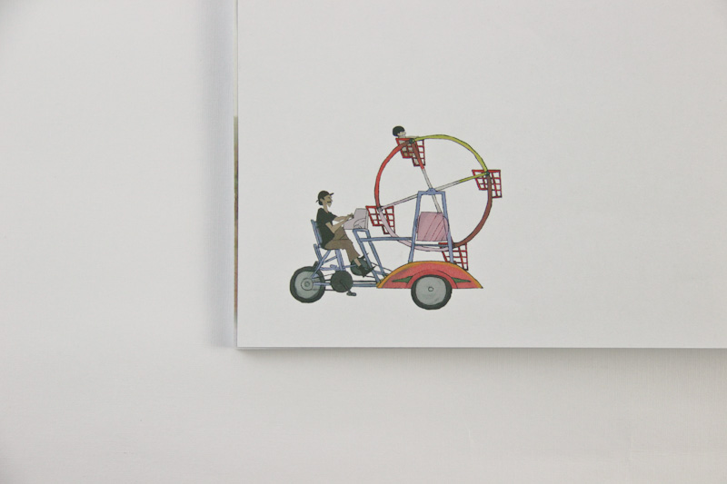
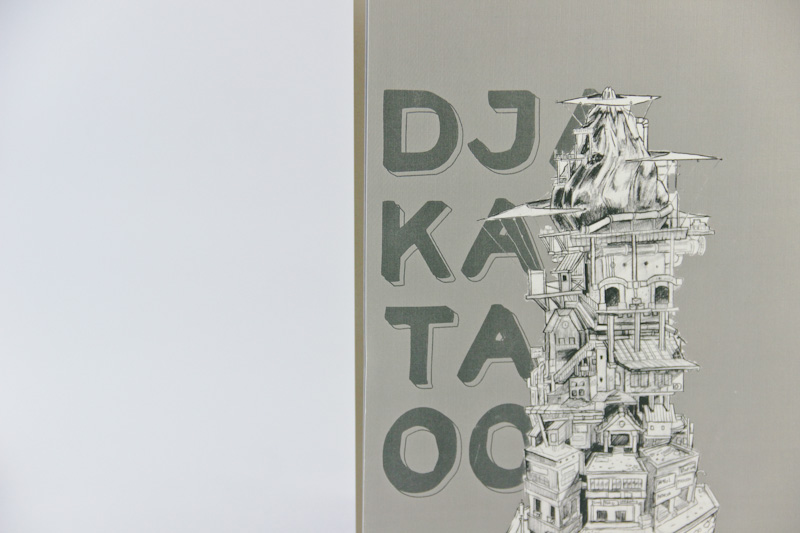
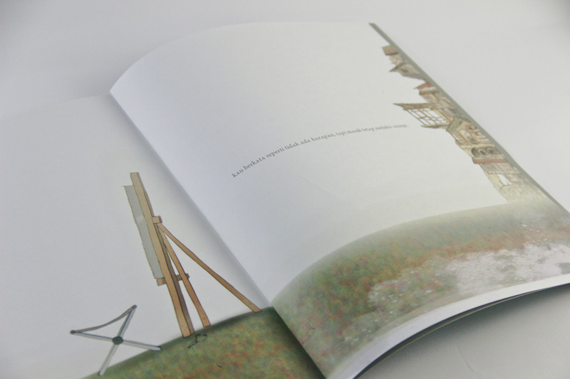
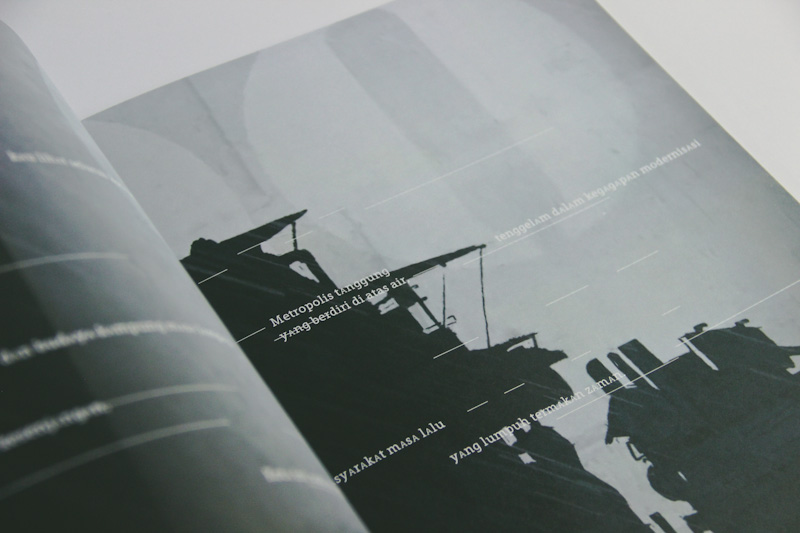
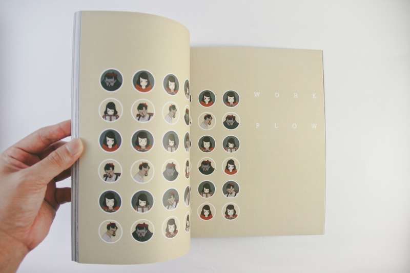
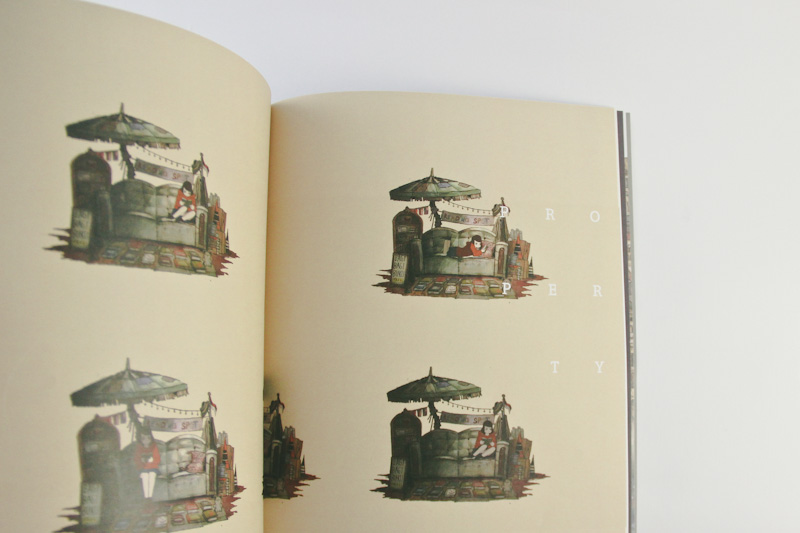
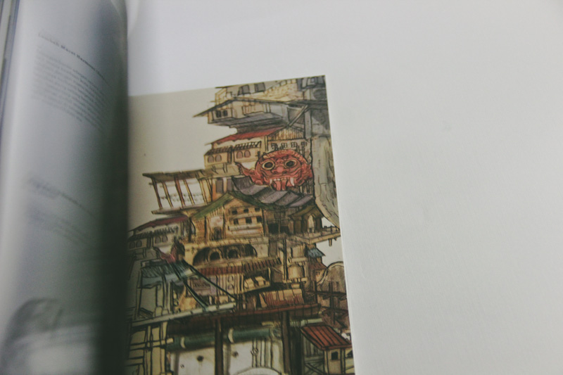
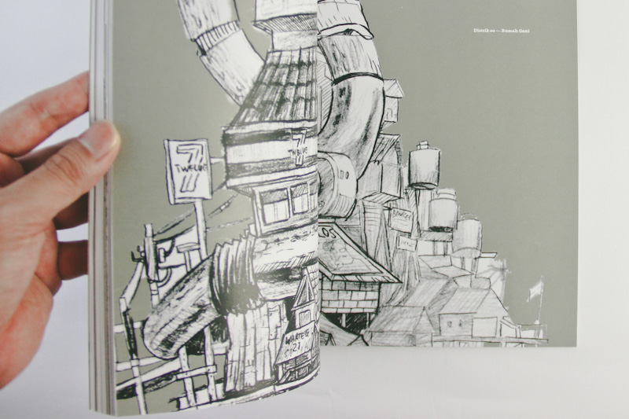
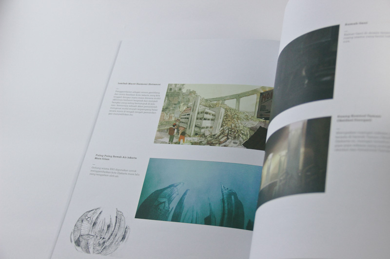
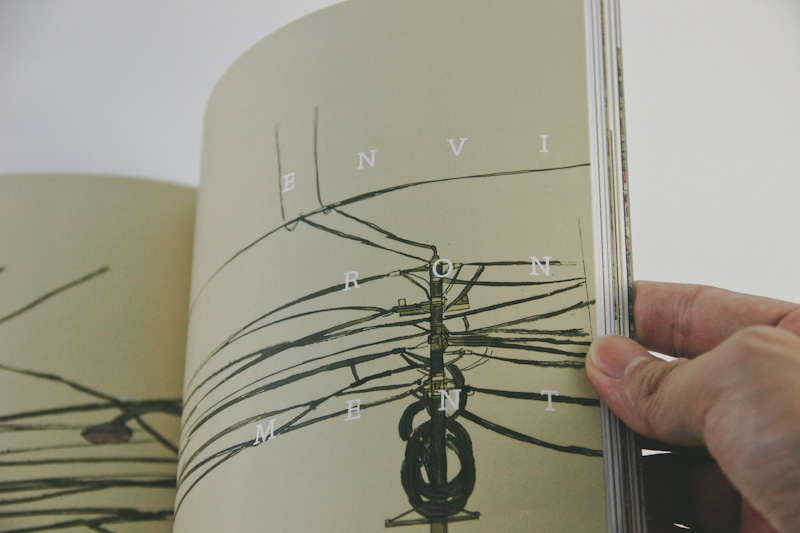
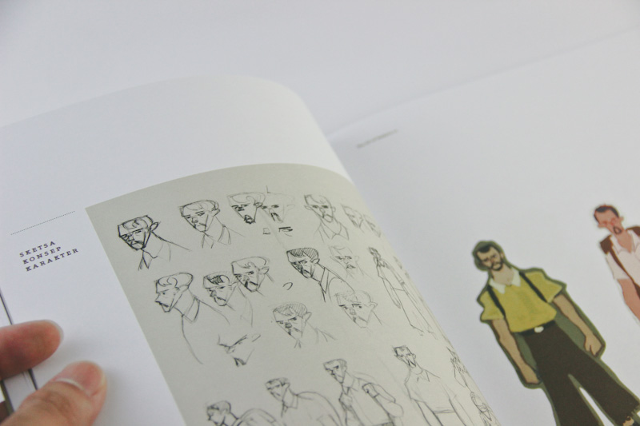
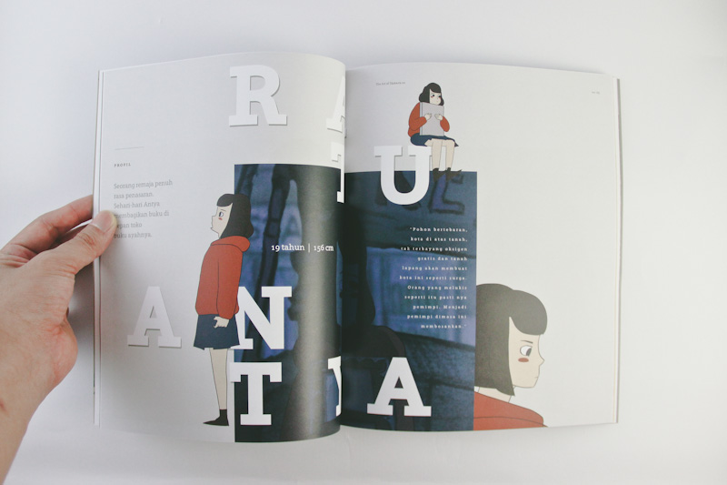
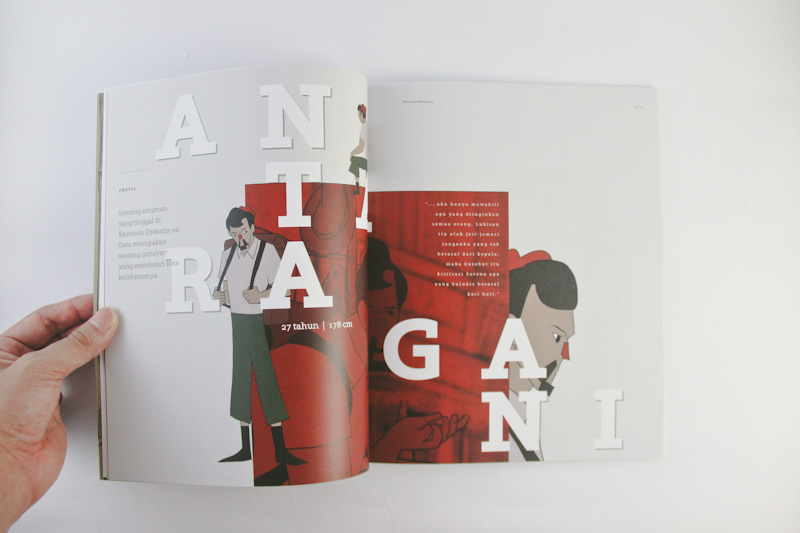
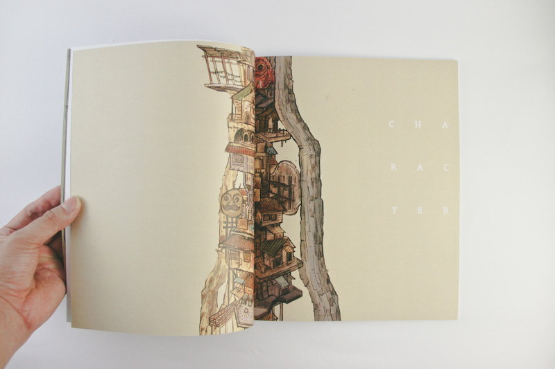
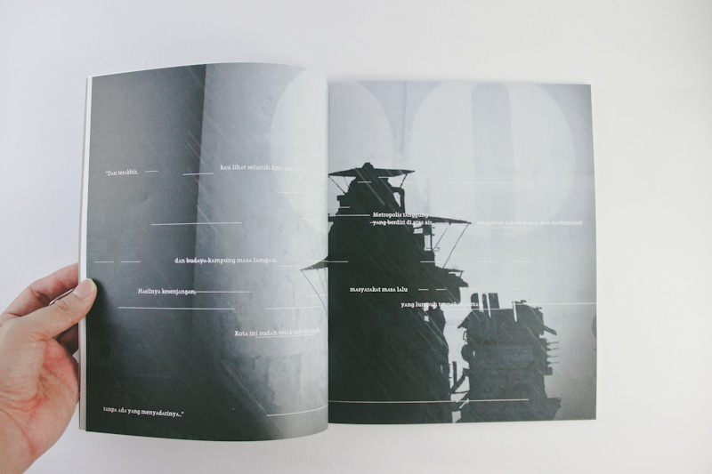
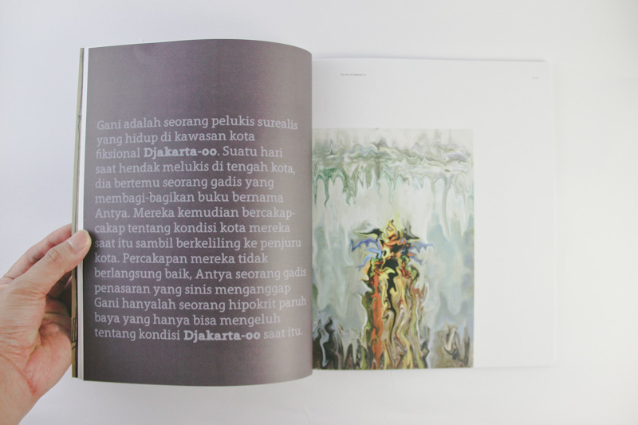
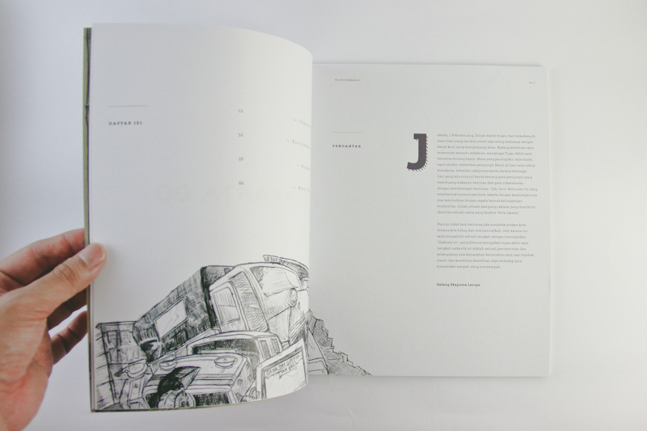
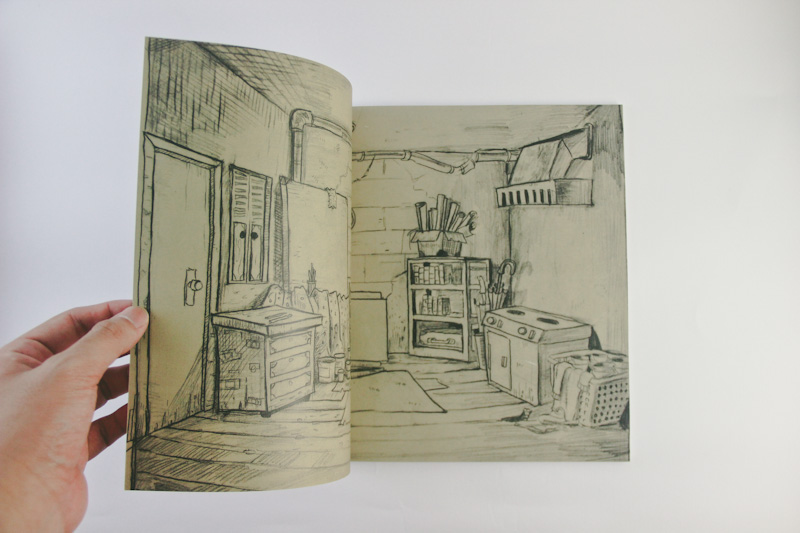
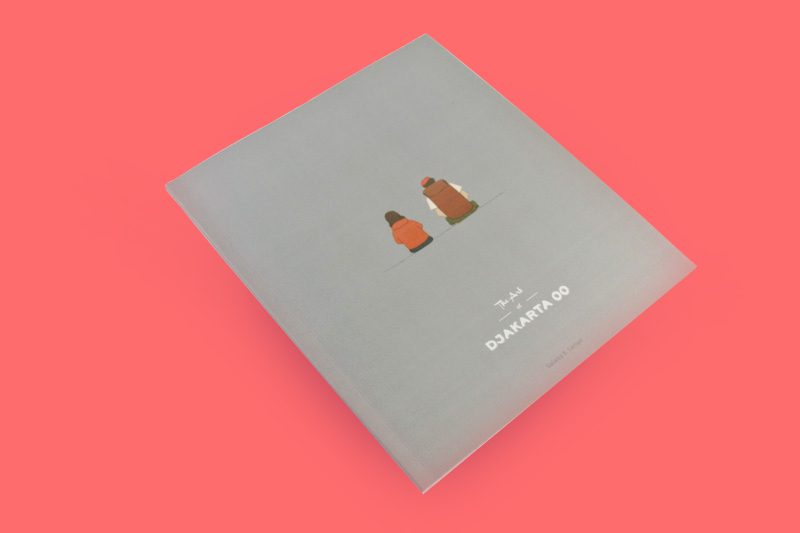